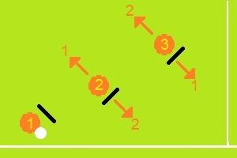
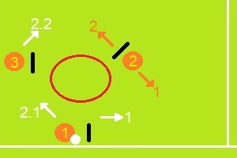

El sable permite acercar el disco lo máximo a la zona de gol cuando la fuerza de la defensa obliga al manejo hacia la línea.
El handler motion es constante buscando un pase determinante a la zona de gol con los cortadores.
Al igual que el sable, el colmillo busca acercar el disco a la zona de gol lo más posible.
Buscar el roto como primera opción permite quebrar la fuerza al medio que busca la defensa. Sin embargo, los movimientos del segundo manejador están sujetos a una zona roja de incidencia de la defensa del tercer defensor que puede ser capitalizada con el dump-swing.
